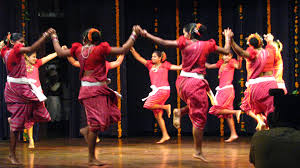

Goa is visited by large numbers of international and domestic tourists each year because of its white-sand beaches, active nightlife, places of worship, and World Heritage-listed architecture. It also has rich flora and fauna because it lies very close to the North Western Ghats rainforests, one of the rare biodiversity hotspots of the world.
"It goes on for almost three days every year with few of the world's most renowned DJs
engaging the crowd with their best works.
Held at Vagator beach in Goa, the Sunburn
Festival
is a three-day experience of unlimited fun and frolic with your friends!"
The cultural roots of the folk dances in Goa will take you back to ancient times as you will see various influences from kings and various cultures and religions. Some of the most popular traditional Folk dances of Goa are - Ghode Modni, Dhangar Dance, Goff Talgadi, Shigmo and Mussel khel etc.
